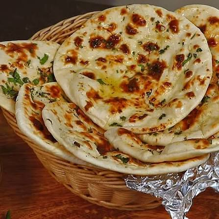

Butter Naan (বাটার নান)

Instructions
- Prepare the Dough: Sift flour, baking powder, baking soda, salt and sugar. Add yogurt and mix.
- Knead: Gradually add warm milk or water. Knead into a soft dough and rest for at least 2 hours.
- Roll: Divide dough into small balls and roll into oval shapes. Apply water to one side.
- Cook: Place the water-coated side on a hot tawa. Once bubbles appear, cook until browned.
- Butter It Up: Remove from heat, brush with melted butter and serve hot.
Cooking Progress
Current Status: In Progress
30% Complete